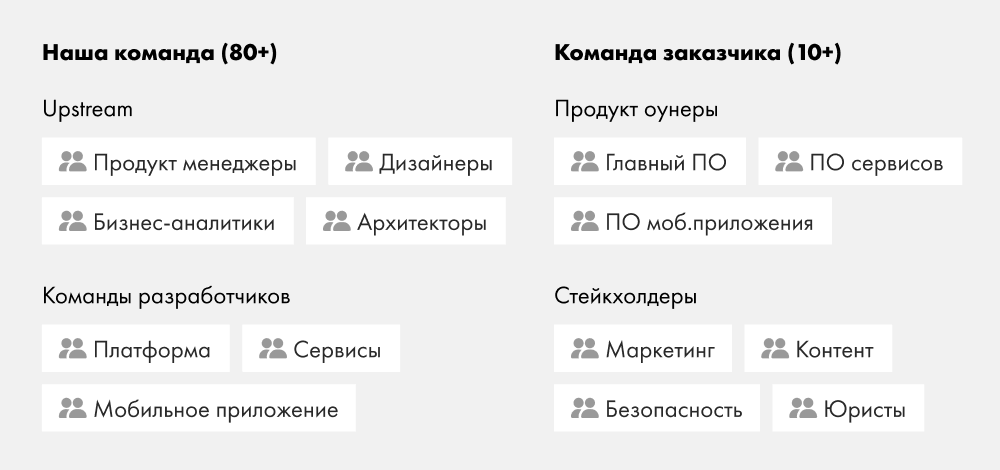
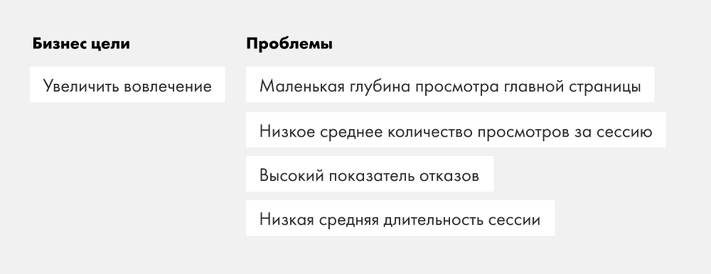
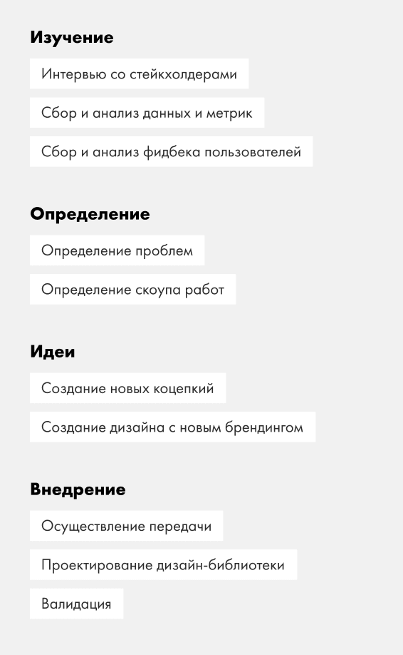
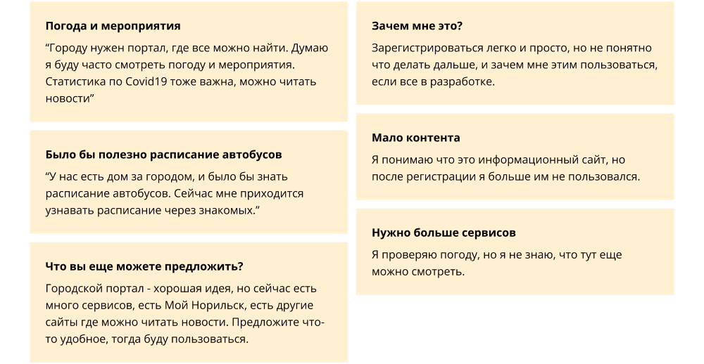
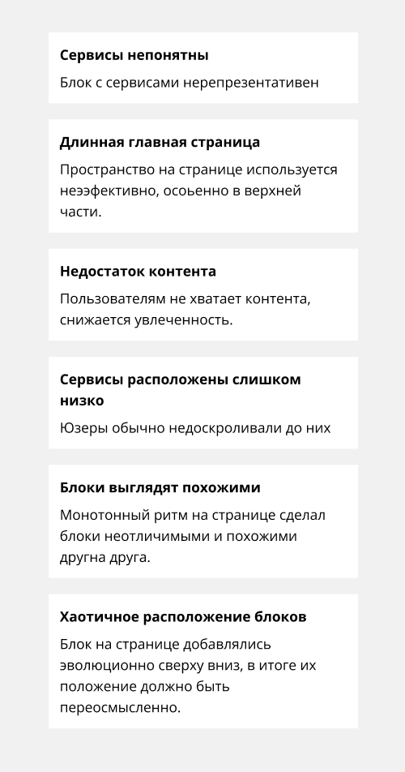
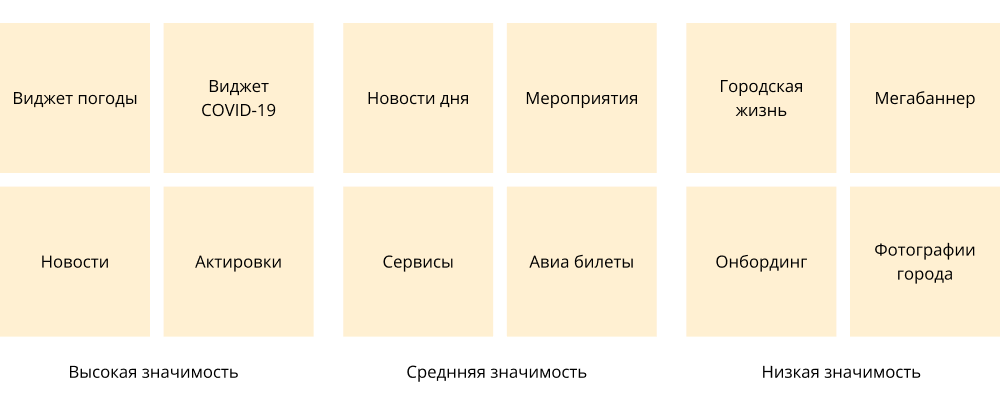

Трансформация городского портала на примере главной страницы
Предыстория
«Норильский никель» — крупнейший в мире производитель никеля и палладия, а также градообразующее предприятие. Большинство жителей Норильска — работники этой компании. Жизнь в северных городах сопряжена с трудностями, горожане живут в экстремальных погодных условиях, где температура зимой может опускаться до −40C и это сказывается на их образе жизни. При таких низких температурах школы переводят на удаленную работу, а дороги в аэропорт могут быть закрыты в случае метели. У «Норильского никеля» возникла идея создать агрегатор онлайн-сервисов для жителей северных городов, чтобы повысить качество жизни горожан за счет предоставления различных онлайн-услуг — от телемедицины до дистанционного образования. Таким образом, городской портал взял быстрый старт и был запущен MVP с парой сервисов. Портал проработал год, когда было решено, что его необходимо пересмотреть.Команда
Команда клиентов
Команда клиента состояла из владельцев продуктов и заинтересованных сторон, отвечающих за конкретные вещи, такие как маркетинговые исследования, консалтинг в области права и безопасности. Каждый владелец продукта отвечал за определенную область услуг, такую как образование, телемедицина, развлечения и т. д.Наша команда
Команды разработчиков отвечали за разные направления. Одна из них занималась разработкой функций платформы, которые влияли на работу всего портала, другая работала над мобильным приложением. В то время как Upstream отвечала за предоставление готовых к разработке требований и макетов. В него входили менеджеры проектов, архитекторы, бизнес-аналитики и дизайнеры.


Цели
Проведя интервью с заинтересованными сторонами и владельцами продукта, команда дизайнеров обнаружила, что основные проблемы заключаются в том, что пользователи практически не изучают главную страницу и сам сайт. Нам предстояло выяснить, почему это происходит, и придумать решение. После нескольких итераций встреч мы определили главную цель редизайна — увеличить вовлеченность пользователей в главную страницу. А метрики для измерения этого были следующими:- Среднее количество страниц за сеанс.
- Показатель отказов.
- Средняя продолжительность сеанса.
💡Примечание
Редизайн осуществлялся для всего портала, но основной акцент был сделан на главной странице как наиболее содержательной.
Процесс
Для достижения поставленной цели мы решили придерживаться довольно стандартного процесса проектирования:-
Оценка
Сначала мы изучаем проблему и собираем всю доступную входную информацию. -
Определение
Затем мы определяем вопросы, на которых мы хотели бы сосредоточиться. -
Идеи
На следующем этапе мы генерируем идеи для решения проблем. -
Внедрение
Мы предоставляем финальный результат, тестируем его и делаем масштабируемым с помощью библиотеки.


Метрики
Мы начали наше исследование с метрик, которые нам предоставили аналитики данных, и картина оказалась не такой уж привлекательной.Статистика прокрутки
Анализ статистики прокрутки на главной странице показал, что пользователи не прокручивали страницу вниз и не изучали контент.Карты кликов
Пользователи в основном обращались к меню в верхней части, но не изучали саму страницу.Фидбек
Мы также собрали отзывы пользователей, и обобщенные комментарии выглядели следующим образом:- Полезны виджеты погоды, школьных ограничений и новостей.
- Недостаточно сервисов.
- Недостаточно контента.

Анализ конкурентов
Мы провели анализ конкурентов, чтобы определить основные характеристики и способ размещения блоков на главных страницах. В качестве ключевых ссылок мы использовали основные городские порталы и агрегаторы государственных услуг.

Охват проблем
Проведя исследование, мы решили сосредоточиться на следующих проблемах:Длинная главная страница
Первый экран был непрактичным, единственные интерактивные элементы находились в меню. Огромную часть занимало просто фоновое изображение. Вся страница была длинной, один блок мог занимать весь экран, пользователю приходилось долго скроллить страницу. Много ненужных блоков и баннеров.Хаотичный порядок блоков
Главная страница развивалась эволюционно по мере появления блоков, их порядок не подвергался сомнению и анализу.Недостаток контента
Не так много контента или сервисов, с которыми можно взаимодействовать.Блоки выглядят одинаково
Новости, услуги, события и прямые трансляции выглядят одинаково — квадратные плитки. Такое представление создавало монотонную сетку, к тому же пользователи не могли определить, что они смотрят на разные типы контента.Непонятные услуги
Карточки услуг занимали много места и не выглядели привлекательно.Услуги расположены слишком низко
Несмотря на то, что этот блок является основным, каким-то образом он оказался в середине страницы, где пользователи не могли его найти.Карточная сортировка
Для того чтобы определить приоритетность блоков главной страницы, мы обратились к методу сортировки карточек. Мы попросили фокус-группу оценить, насколько ценными являются текущие блоки главной страницы. Собрав эти данные, мы смогли перейти к следующему шагу — построению информационной архитектуры главной страницы.

Концепты и прототипы
На этом этапе мы начали генерировать идеи, как может выглядеть информационная архитектура и макеты с низкой точностью. Мы создали более 20 различных концепций, не только статичных, но и интерактивных прототипов. В конце концов, через несколько итераций мы согласовали один из них с заказчиком и смогли приступить к работе над визуальной частью.
Варианты с высокой детализацией на базе фирменного стиля
Пока мы проводили исследования и работали над концепцией макета, другой подрядчик подготовил новый брендинг, который мы должны были включить в дизайн портала. Основная идея этого брендинга заключалась в том, чтобы он был ярким и привлекающим внимание, а также должен был отражать образ жизни современных граждан, которые находятся на связи с технологиями и онлайн-сервисами. Но выяснилось, что на базе этого фирменного стиля непросто построить интерфейс и подобрать UI. Цветные плашки и гербы хорошо смотрелись на крупных элементах: паттернах, больших картинках, в соцсетях. Но в условиях городского портала, где много маленьких элементов, панелей, навигации, этот стиль сильно мешал. Мы ощущали это сами, это подтверждал заказчик и это подтверждали опросы внутри компании. Ниже различные пробные варианты по внедрению этого стиля на платформу.

Финальный вариант
В конце концов, было решено смягчить цвета, так как они были слишком яркими и отвлекали внимание. Герб, как графический элемент, мы стали использовать ситуационно на баннерах. В процессе демонстраций и обсуждений мы так же скорректировали первоначальный прототип, упростив и поменяв некоторые механики.
Я внес вклад в дизайн верхней части главной (меню, виджеты, услуги), оформление баннеров, мнения, афишу и некоторые другие.
В дизайне остальных блоков я участвовал консультационно, во время дизайн-ревью.

Дизайн-библиотека
Во время работы над дизайном параллельно решалась задача создания новой библиотеки. В предыдущей библиотеке было много лишних и плохо собранных компонентов. У нас был шанс переосмыслить ее и мы создали новую, используя лучшие практики. Мы придерживались подхода атомарного дизайна в компонентах — от маленьких элементов управления до организмов. О дизайн-системе рассказано в отдельном кейсе.
Результаты
Проделанная огромная работа положительно повлияла на отзывы пользователей и ключевые показатели, к которым мы стремились:- Среднее просматриваемое количество страниц за сеанс выросло на 113%
- Средняя продолжительность сеанса увеличилась на 103%
- Показатель отказов снизился на 7,24%